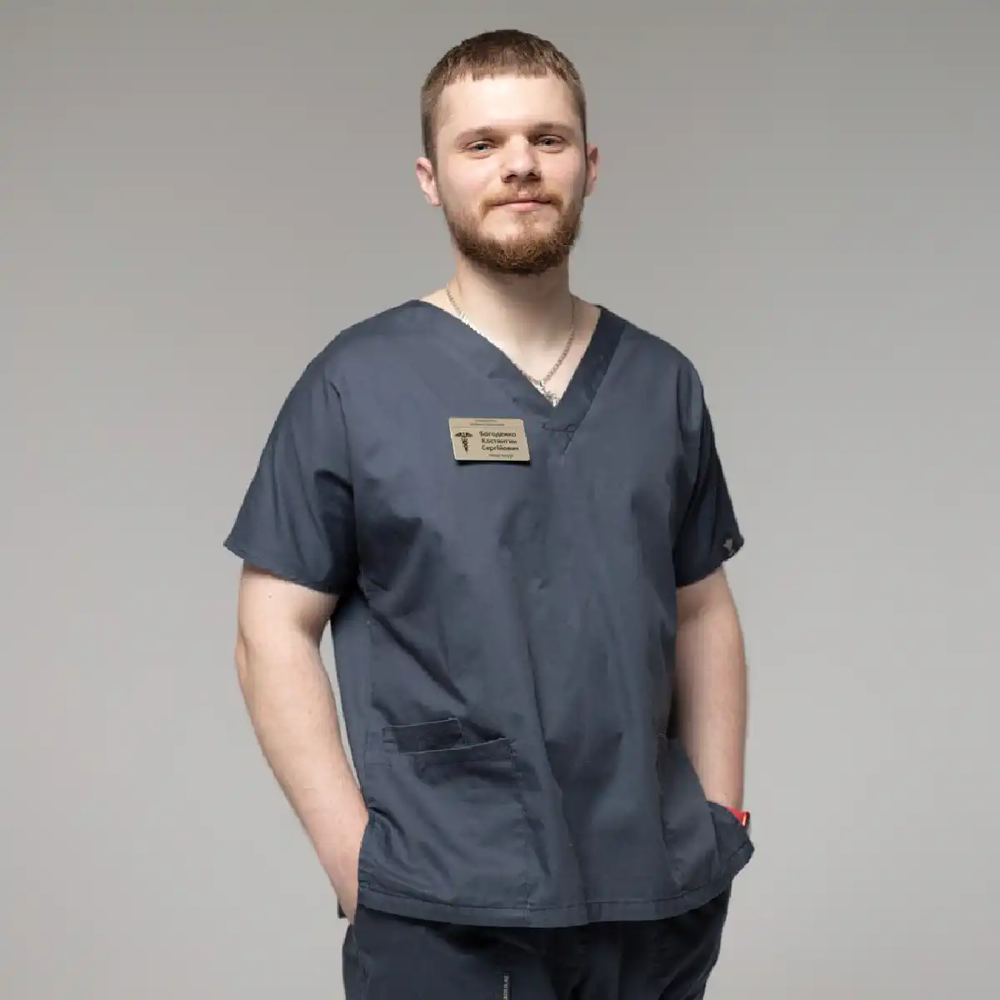

+38(068) 79 72 782
+38(068) 79 72 782Підшивка від наркотиків Черкаси
Контроль, захист та новий старт


Безкоштовна консультація, працюємо цілодобово 24/7
Контроль, захист та новий старт

Наркотична залежність — це тяжке хронічне захворювання, яке потребує комплексного та професійного лікування. Одним із методів, який застосовується у складі протирецидивної терапії, є підшивка від наркотиків. У Черкасах ця процедура розглядається як додатковий спосіб допомоги пацієнту, який уже прийняв рішення відмовитися від вживання та потребує медикаментозної підтримки для закріплення результату. Підшивка не є універсальним або самостійним лікуванням залежності. Вона не усуває глибинні психологічні причини вживання, але може стати важливою частиною комплексної програми, що включає детоксикацію, спостереження лікаря, психотерапію та реабілітацію. Правильно підібраний підхід допомагає знизити ризик зриву та підтримати пацієнта на етапі відмови від наркотиків.
Процедура підшивки передбачає введення або імплантацію препарату, який формує стійку негативну реакцію організму на вживання наркотичних речовин або блокує їхню дію. Це створює своєрідний «бар’єр», який допомагає пацієнту утримуватися від зриву в критичні моменти, коли потяг до речовини залишається високим. Особливо важливо це на ранніх етапах ремісії, коли психологічна залежність ще виражена, а навички самоконтролю лише формуються. Підшивка може використовуватися як один із етапів тривалої програми лікування, спрямованої на досягнення стійкої ремісії. При правильному підході вона допомагає знизити рівень тривожності, зменшити нав’язливий потяг і створити додатковий захист від зриву. Однак найкращі результати досягаються лише при поєднанні медикаментозної терапії, психотерапії та підтримки з боку спеціалістів.
Підшивка від наркотиків у Черкасах — це не «швидке рішення», а частина системного підходу до лікування залежності. Вона може значно підвищити шанси на успішне відновлення, якщо застосовується грамотно та в комплексі з іншими методами. Головна мета лікування — не лише відмова від наркотиків, а й повне відновлення фізичного та психоемоційного стану пацієнта, повернення до повноцінного та здорового життя
Підшивка від наркотиків — це медична процедура, під час якої пацієнту вводиться спеціальний препарат пролонгованої дії, що допомагає знизити ризик повторного вживання. Залежно від виду залежності та обраного методу, дія препарату може бути спрямована на блокування ефекту наркотичної речовини, зниження потягу або створення додаткових умов для утримання ремісії. Найчастіше підшивка застосовується не як окремий спосіб лікування, а як один із етапів після очищення організму. Перед процедурою пацієнт повинен пройти обстеження, консультацію спеціаліста та, за необхідності, курс детоксикації. Лише після цього лікар може визначити, чи підходить цей метод конкретній людині.
З медичної точки зору підшивка належить до методів протирецидивної терапії. Її основне завдання — сформувати додатковий захисний механізм, який допомагає пацієнту утримуватися від вживання в період, коли ризик зриву найбільш високий. У цей час організм уже очищений від наркотичних речовин, однак психологічна залежність і звичні поведінкові реакції ще зберігаються. Існує кілька варіантів проведення процедури. Препарат може вводитися у вигляді ін’єкції або імплантуватися під шкіру, забезпечуючи поступове вивільнення активної речовини протягом тривалого часу — від кількох місяців до року. Такий формат зручний тим, що пацієнту не потрібно щодня контролювати прийом ліків, а терапевтичний ефект підтримується автоматично.
Механізм дії підшивки залежить від використовуваного препарату. Одні засоби блокують рецептори, через які наркотики чинять свій вплив, у результаті чого людина не відчуває очікуваного ефекту. Інші препарати можуть викликати виражене погіршення самопочуття при спробі вживання, формуючи умовно-рефлекторну відразу. Також існують медикаменти, спрямовані на зниження патологічного потягу та стабілізацію емоційного стану. Перед проведенням процедури вкрай важливо дотримання періоду тверезості. Наявність наркотичних речовин в організмі може призвести до небажаних реакцій або ускладнень. Саме тому детоксикація та контроль з боку лікаря є обов’язковими етапами підготовки. Крім того, спеціаліст оцінює загальний стан здоров’я пацієнта, наявність хронічних захворювань, психоемоційний статус і рівень мотивації до лікування.
Підшитися від наркотиків — означає пройти процедуру медикаментозного кодування або імплантації препарату, який буде діяти протягом певного часу та допомагати утримуватися від вживання. Для багатьох пацієнтів це стає додатковою опорою на початку тверезого періоду, коли ризик зриву особливо високий. Важливо розуміти, що сама по собі підшивка не «лікує» залежність повністю. Вона не змінює мислення, не усуває психологічний потяг автоматично і не вирішує соціальні проблеми, пов’язані з вживанням. Однак за наявності мотивації та готовності працювати над одужанням цей метод може посилити ефективність загальної терапії та допомогти пацієнту утриматися від повернення до наркотиків.
По суті, підшивка формує зовнішню «страховку» на період, коли внутрішні ресурси пацієнта ще недостатньо стійкі. У перші тижні та місяці відмови від наркотиків людина стикається з вираженим потягом, емоційною нестабільністю, тривожністю та стресом. У цей момент навіть незначні провокуючі фактори можуть призвести до зриву. Наявність препарату, який блокує ефект речовини або викликає негативну реакцію при вживанні, знижує ймовірність імпульсивного рішення повернутися до наркотиків.
Крім того, підшивка допомагає сформувати у пацієнта відчуття контролю над ситуацією. Усвідомлення того, що вживання не принесе очікуваного ефекту або призведе до погіршення самопочуття, часто знижує інтенсивність патологічного потягу. Це дає час для того, щоб включитися в психотерапевтичну роботу, відновити фізичний стан і почати вибудовувати нову систему поведінки без наркотиків. Рішення «підшитися» має бути добровільним і усвідомленим. Примусове проведення процедури, без внутрішньої готовності пацієнта до змін, як правило, не дає стійкого результату. Навпаки, за наявності мотивації підшивка стає ефективним інструментом, який допомагає закріпити рішення відмовитися від вживання.
Також необхідно розуміти, що термін дії препарату обмежений. Після закінчення його ефекту ризик зриву може знову зростати, якщо пацієнт не пройшов повноцінну реабілітацію та не змінив спосіб життя. Саме тому спеціалісти рекомендують використовувати цей період максимально ефективно — працювати з психологом, брати участь у програмах відновлення, зміцнювати навички самоконтролю та уникати провокуючих ситуацій.
Механізм дії залежить від того, який саме препарат використовується. В одних випадках засіб блокує рецептори, через що вживання наркотика не викликає очікуваного ефекту. В інших — препарат знижує вираженість потягу і допомагає пацієнту легше переносити період відмови від психоактивних речовин.
Основна мета підшивки — сформувати додатковий бар’єр між пацієнтом і повторним вживанням. Коли людина знає, що ефект наркотика буде заблокований або що при порушенні рекомендацій можливі серйозні наслідки для самопочуття, ймовірність імпульсивного зриву знижується. Але стійкий результат можливий лише за умови, що підшивка поєднується з психологічною допомогою та подальшою реабілітацією. З фармакологічної точки зору препарати для підшивки впливають на центральну нервову систему, змінюючи реакцію організму на наркотичні речовини. Блокатори рецепторів перешкоджають формуванню ейфорії, тим самим «знецінюючи» вживання. У результаті людина перестає отримувати очікуване підкріплення, що поступово знижує поведінкову залежність.
Препарати, спрямовані на зниження потягу, діють інакше. Вони стабілізують нейромедіаторні процеси, зменшують тривожність, дратівливість, внутрішнє напруження та інші прояви абстиненції. Це особливо важливо в перші тижні відмови, коли ризик повернення до вживання пов’язаний не лише зі звичкою, а й із вираженим дискомфортом. Важливим елементом є формування умовно-рефлекторного захисту. У деяких випадках пацієнт усвідомлює, що порушення режиму лікування може призвести до погіршення самопочуття. Цей фактор посилює контроль над поведінкою та допомагає уникати ситуацій, пов’язаних із вживанням наркотиків.
Однак необхідно враховувати, що підшивка не усуває нейропсихологічні механізми залежності повністю. Пам’ять про наркотичний досвід, тригери, стресові ситуації та соціальне оточення продовжують впливати на поведінку людини. Саме тому без паралельної психотерапії та роботи над способом життя навіть ефективний препарат не гарантує тривалої ремісії. Комплексна терапія дозволяє посилити дію підшивки. Робота з психологом допомагає виявити причини залежності, навчитися керувати емоціями та формувати нові моделі поведінки. Реабілітаційні програми спрямовані на відновлення соціальної активності, навичок спілкування та стійкості до стресу.
Для підшивки застосовуються препарати, які підбираються строго лікарем залежно від виду залежності, загального стану пацієнта, стажу вживання та наявності протипоказань. Найчастіше йдеться про засоби пролонгованої дії, здатні тривало підтримувати терапевтичний ефект. Вибір препарату завжди індивідуальний. Самостійно вирішувати, який засіб використовувати, неприпустимо, оскільки це може бути небезпечно для здоров’я. Перед призначенням обов’язково проводиться огляд, збір анамнезу та оцінка стану пацієнта. Лише після цього спеціаліст визначає, чи підходить підшивка, і який варіант буде найбільш безпечним і ефективним.
У сучасній наркологічній практиці використовуються різні групи препаратів. Це можуть бути антагоністи рецепторів, які блокують дію наркотичних речовин, а також засоби, що впливають на нейромедіаторні системи мозку і зменшують патологічний потяг. Одним із найбільш відомих препаратів є Налтрексон — антагоніст опіоїдних рецепторів, який блокує ефект опіоїдів і знижує ризик отримання ейфорії при їх вживанні. Завдяки цьому поступово зменшується психологічна залежність і знижується ймовірність зриву.
Деякі препарати додатково спрямовані на стабілізацію емоційного стану, зниження тривожності та покращення сну, що особливо важливо в період відмови від вживання. Такий комплексний фармакологічний підхід допомагає пацієнту легше пройти етап адаптації до тверезості. Форма введення також підбирається індивідуально. Залежно від клінічної ситуації препарат може вводитися внутрішньом’язово, внутрішньовенно або імплантуватися під шкіру у вигляді капсули. Імплантація забезпечує поступове і рівномірне вивільнення діючої речовини, завдяки чому досягається тривалий ефект без необхідності регулярного прийому ліків.
Окрема увага приділяється безпеці процедури. Перед підшивкою лікар оцінює стан серцево-судинної системи, печінки, нирок, а також психічний стан пацієнта. За наявності протипоказань процедура може бути відкладена або замінена іншими методами лікування. Це дозволяє мінімізувати ризики та забезпечити максимально щадний підхід. Важливим фактором є дотримання періоду тверезості перед проведенням процедури. Введення препарату на фоні наявності наркотичних речовин в організмі може призвести до небажаних реакцій. Тому детоксикація та медичне спостереження є обов’язковими етапами підготовки.
Після проведення підшивки пацієнту надаються детальні рекомендації. Лікар пояснює, як діє препарат, які обмеження необхідно дотримуватися і на які симптоми слід звертати увагу. Це допомагає уникнути ускладнень і підвищує ефективність лікування. Препарати для підшивки — це серйозні медичні засоби, що потребують професійного підходу. Їх правильний підбір і використання під контролем спеціаліста дозволяють підвищити ефективність терапії, знизити ризик зриву та створити умови для стабільного відновлення пацієнта.
Ефективність підшивки залежить не лише від препарату, а й від самого пацієнта. Найкращі результати спостерігаються в тих випадках, коли людина усвідомлено погоджується на лікування, розуміє необхідність відмови від наркотиків і готова продовжувати терапію після процедури. Підшивка може бути ефективною як частина комплексного лікування, оскільки вона допомагає знизити ризик зриву в найбільш уразливий період. Однак очікувати, що одна процедура повністю позбавить від залежності, не варто. За відсутності психотерапії, зміни способу життя і роботи з причинами вживання навіть після підшивки зберігається ризик повернення до наркотиків.
Ключовим фактором ефективності є внутрішня мотивація пацієнта. Якщо людина сприймає підшивку як тимчасовий «захист» і паралельно працює над своїм станом, результат лікування значно покращується. У протилежному випадку, за відсутності усвідомленого підходу, ефект може бути короткостроковим і не призвести до стійкої ремісії. Особливо важливо використовувати період дії препарату максимально ефективно. Це час, коли знижується ймовірність зриву, і у пацієнта з’являється можливість зосередитися на відновленні: пройти курс психотерапії, навчитися справлятися зі стресом без наркотиків, змінити коло спілкування та повсякденні звички. Саме в цей період закладається основа для подальшого тверезого життя.
На ефективність також впливає підтримка з боку спеціалістів і близьких. Регулярне спостереження лікаря, участь у реабілітаційних програмах і залученість сім’ї допомагають пацієнту відчувати опору і не залишатися наодинці з проблемою. Це знижує рівень тривожності та підвищує стійкість до тригерів. Слід враховувати й індивідуальні особливості організму. У різних пацієнтів реакція на препарати може відрізнятися, як і ступінь вираженості потягу. Тому важливо дотримуватися всіх рекомендацій лікаря і за необхідності коригувати план лікування.
Вартість підшивки від наркотиків у Черкасах починається від 15000 грн.
| Популярні послуги | Ціна |
|---|---|
| Консультація нарколога | Від 1500 грн |
| Крапельниця від наркотиків | Від 2499 грн |
| Лікування наркоманії | Від 2499 грн |
| Виведення із запою вдома | Від 2199 грн |
Термін дії підшивки залежить від виду препарату, його дозування та особливостей організму пацієнта. В одних випадках ефект може зберігатися кілька місяців, в інших — довше. У середньому тривалість медикаментозного захисту може становити від 1 до 5 років, залежно від обраного методу та клінічної ситуації. Тривалість дії завжди обговорюється з лікарем заздалегідь, щоб пацієнт розумів, на який період розрахована терапія. Навіть після закінчення дії препарату людина потребує подальшого спостереження і психологічної підтримки. Якщо обмежитися лише тимчасовим медикаментозним ефектом і не продовжувати лікування, ризик рецидиву може знову збільшитися.
Тривалість дії підшивки також залежить від форми введення препарату. Ін’єкційні форми, як правило, розраховані на певний термін — від одного до кількох місяців, тоді як імпланти можуть забезпечувати більш тривалий ефект за рахунок поступового вивільнення діючої речовини. При цьому швидкість метаболізму, стан печінки та загальний рівень здоров’я пацієнта можуть впливати на тривалість і вираженість дії. Завершення дії препарату — це критичний період. У цей час знижується фармакологічний захист, і за відсутності психологічної стійкості зростає ризик повернення до попередніх моделей поведінки. Саме тому лікарі рекомендують заздалегідь планувати подальші кроки: продовження медикаментозної підтримки або перехід до наступного етапу терапії.
У ряді випадків можливе повторне проведення підшивки, якщо це показано і пацієнт продовжує потребувати додаткового захисту. Однак таке рішення приймається лише спеціалістом після оцінки стану та динаміки відновлення. Самостійно приймати рішення про повторну процедуру не рекомендується. Підшивки — це лише частина лікувального процесу. Для досягнення стійкого результату важливо використовувати цей період максимально ефективно і продовжувати лікування навіть після завершення дії препарату. Комплексний підхід дозволяє знизити ризик рецидиву і створити міцну основу для тривалої ремісії.
Перед проведенням підшивки пацієнт повинен пройти обов’язкову підготовку. Насамперед необхідно повністю припинити вживання наркотиків і, за необхідності, пройти детоксикацію. Це важливо для того, щоб організм був очищений від психоактивних речовин, а сама процедура була максимально безпечною. Також підготовка включає консультацію лікаря, оцінку загального стану, збір інформації про стаж вживання, супутні захворювання та раніше проведене лікування. У деяких випадках можуть знадобитися додаткові обстеження. Підготовчий етап є вкрай важливим, оскільки дозволяє уникнути ускладнень і підібрати найбільш відповідну схему терапії.
Однією з ключових умов є дотримання періоду тверезості перед процедурою. Його тривалість визначається лікарем і залежить від виду вживаних речовин, тривалості залежності та стану організму. Порушення цієї вимоги може призвести до небажаних реакцій, тому контроль з боку спеціаліста є обов’язковим.
На етапі підготовки також проводиться оцінка психоемоційного стану пацієнта. Важливо визначити рівень мотивації, наявність тривожних або депресивних станів, а також готовність до подальшого лікування. За необхідності може бути рекомендована попередня робота з психологом, щоб підвищити ефективність підшивки і знизити ризик зриву в майбутньому. Додатково лікар може призначити лабораторні дослідження — аналізи крові, оцінку функції печінки та нирок, а також інші обстеження за показаннями. Це дозволяє виявити можливі протипоказання і підібрати максимально безпечний препарат.
Перед процедурою пацієнту обов’язково пояснюють механізм дії обраного засобу, можливі обмеження і правила поведінки після підшивки. Поінформованість пацієнта відіграє важливу роль, оскільки допомагає уникнути порушень режиму і підвищує відповідальність за власне лікування. Таким чином, підготовка до підшивки — це не формальність, а найважливіший етап, від якого безпосередньо залежить безпека і ефективність процедури.
Підшивка проводиться поетапно. Спочатку пацієнт проходить консультацію спеціаліста та обстеження. Далі, за необхідності, виконується детоксикація і стабілізація стану. Після цього лікар визначає, чи можна проводити процедуру і який препарат буде використовуватися. Безпосередньо сама підшивка виконується в медичних умовах. Після введення препарату пацієнт отримує рекомендації щодо подальшого режиму, спостереження і продовження лікування. Дуже важливо дотримуватися всіх призначень лікаря, оскільки ефективність процедури значною мірою залежить від правильної поведінки пацієнта після неї.
Процедура може проводитися різними способами залежно від обраного методу. В одних випадках препарат вводиться у вигляді ін’єкції, в інших — імплантується під шкіру через невеликий розріз. Маніпуляція виконується в стерильних умовах і, як правило, займає мінімальний час. За необхідності використовується місцева анестезія, що робить процедуру максимально комфортною для пацієнта. Після проведення підшивки пацієнт певний час залишається під наглядом медичного персоналу. Це необхідно для контролю загального стану і своєчасного виявлення можливих реакцій організму. У більшості випадків процедура переноситься добре, однак лікар завжди оцінює індивідуальні особливості пацієнта.
Особлива увага приділяється рекомендаціям на період після підшивки. Пацієнту пояснюють, яких обмежень необхідно дотримуватися, як реагувати на зміни самопочуття і коли слід звертатися за медичною допомогою. Також обговорюється необхідність подальшого лікування — відвідування лікаря, психотерапія і участь у реабілітаційних програмах.
Одним із етапів є формування правильної поведінки після процедури. Необхідно уникати ситуацій, пов’язаних із вживанням наркотиків, обмежити контакти з попереднім оточенням і зосередитися на відновленні. Підтримка з боку близьких і спеціалістів у цей період значно підвищує шанси на успішний результат. Підшивка — це чітко організований медичний процес, який включає кілька послідовних етапів: підготовку, проведення процедури і подальший супровід. Лише за дотримання всіх цих умов можна розраховувати на максимальну ефективність і зниження ризику рецидиву.
Як і будь-яка медична процедура, підшивка має протипоказання. До них можуть належати тяжкі захворювання внутрішніх органів, серйозні психічні розлади, гострі інфекційні стани, деякі серцево-судинні порушення, а також індивідуальна непереносимість компонентів препарату. Крім того, підшивка не проводиться без попередньої оцінки стану пацієнта. Якщо людина перебуває у стані гострої інтоксикації або не пройшла необхідну підготовку, процедура може бути відкладена. Саме тому рішення про проведення підшивки має приймати лише лікар після очної консультації та обстеження.
До числа відносних протипоказань також можуть належати порушення функції печінки та нирок, оскільки саме ці органи беруть участь у метаболізмі та виведенні препаратів. При виражених відхиленнях лікар може обрати альтернативний метод лікування або відкласти процедуру до стабілізації стану. Особлива увага приділяється психічному стану пацієнта. За наявності гострих психозів, вираженої депресії з суїцидальними ризиками або інших тяжких психічних порушень проведення підшивки може бути небезпечним. У таких випадках пріоритет надається стабілізації стану та спеціалізованій психіатричній допомозі.
Також протипоказанням може бути відсутність усвідомленої згоди пацієнта на лікування. Примусове проведення процедури без розуміння її суті та наслідків, як правило, неефективне і може призвести до порушення рекомендацій після підшивки. Лікар обов’язково враховує і можливі лікарські взаємодії. Якщо пацієнт приймає інші препарати, це може вплинути на вибір засобу для підшивки або потребувати корекції терапії.
Вибір методу лікування залежить від форми залежності, стажу вживання, стану організму та рівня мотивації пацієнта. Підшивка може бути корисним елементом лікування, але вона не замінює детоксикацію, психотерапію, медикаментозну підтримку і реабілітацію. У багатьох випадках найкращий результат дає саме комплексний підхід. Якщо пацієнту потрібно зняти ломку, стабілізувати психічний стан і пропрацювати причини залежності, однієї підшивки буде недостатньо. Тому правильніше розглядати її не як альтернативу іншим методам, а як частину загальної програми відновлення.
Комплексне лікування дозволяє впливати на залежність з різних сторін. Детоксикація допомагає очистити організм і зняти гострі симптоми інтоксикації, медикаментозна підтримка стабілізує загальний стан, а психотерапія спрямована на усунення причин вживання і формування нових моделей поведінки. Підшивка в цьому процесі виконує роль додаткового захисту, знижуючи ризик зриву на ранніх етапах відновлення. Залежність — це не лише фізична, а й психологічна проблема. Навіть після припинення вживання зберігаються тригери: стрес, звичне оточення, емоційні переживання. Без роботи з цими факторами ризик рецидиву залишається високим. Саме тому реабілітаційні програми відіграють ключову роль у досягненні стійкої ремісії.
Також велике значення має індивідуальний підхід. Для одного пацієнта пріоритетом може бути зняття абстиненції і стабілізація стану, для іншого — тривала психотерапія і соціальна адаптація. Лікар формує план лікування з урахуванням усіх цих факторів, комбінуючи різні методи для досягнення максимального результату. Підшивка може бути особливо корисною в тих випадках, коли пацієнт уже пройшов детоксикацію і готовий до подальшого лікування, але потребує додаткової підтримки для запобігання зриву. Вона допомагає створити тимчасовий «захисний бар’єр», дозволяючи зосередитися на відновленні без постійного ризику повернення до вживання.
Так, ризик зриву після підшивки зберігається, якщо людина не продовжує лікування і не змінює спосіб життя. Процедура може знизити ймовірність повторного вживання, але не усуває автоматично психологічний потяг, звичні сценарії поведінки та вплив несприятливого оточення. Саме тому після підшивки особливо важливо продовжувати роботу з психологом, відвідувати реабілітаційні програми і уникати тригерів, які можуть призвести до повернення до наркотиків. Чим активніше пацієнт включений у процес одужання, тим вища ймовірність тривалої ремісії.
Зрив найчастіше відбувається не через відсутність медикаментозного захисту, а через невирішені внутрішні та зовнішні фактори. Це можуть бути стресові ситуації, конфлікти, відчуття самотності, повернення до попереднього середовища спілкування або відсутність чітких життєвих орієнтирів. Без опрацювання цих аспектів ризик рецидиву залишається навіть за наявності підшивки.
Робота з психологом допомагає пацієнту навчитися розпізнавати свої тригери, керувати емоціями та вибудовувати нові моделі поведінки. Реабілітаційні програми, у свою чергу, дають структуровану підтримку, формують дисципліну і допомагають відновити соціальні навички. Це особливо важливо для повернення до повноцінного життя без залежності.
Не менш важливим є зміна способу життя. Регулярний режим дня, фізична активність, нові інтереси і оточення без вживання створюють стійку основу для тверезості. Підтримка сім’ї та близьких також відіграє важливу роль, знижуючи рівень стресу і допомагаючи пацієнту почуватися впевненіше. Підшивка — це лише один із інструментів, який допомагає знизити ризик зриву, але не замінює повноцінного лікування. Стійкий результат досягається лише при активній участі пацієнта, продовженні терапії та комплексному підході до відновлення.
Після підшивки пацієнту необхідна повноцінна реабілітація. Цей етап допомагає закріпити результат, відновити емоційний стан, навчитися жити без наркотиків і справлятися зі стресом без психоактивних речовин. Без реабілітації навіть успішна підшивка може дати лише тимчасовий ефект. У межах реабілітації проводиться психологічна робота, формуються нові звички, відновлюються соціальні зв’язки та навички самоконтролю. Пацієнт вчиться розпізнавати ситуації ризику, працювати з потягом і вибудовувати нову модель поведінки. Саме реабілітація робить лікування більш стійким і знижує ризик повторного зриву.
Реабілітаційний процес зазвичай включає кілька напрямків. Індивідуальна психотерапія допомагає глибше розібратися в причинах залежності, опрацювати внутрішні конфлікти та навчитися справлятися з емоційними труднощами. Групові заняття дають підтримку, дозволяють обмінюватися досвідом і відчувати, що людина не залишається наодинці зі своєю проблемою. Велике значення має формування нових життєвих орієнтирів. У період залежності багато пацієнтів втрачають інтерес до роботи, хобі та соціальних контактів. Реабілітація допомагає поступово відновити ці сфери, повернути відчуття відповідальності та впевненості в собі. Це знижує ймовірність повернення до попереднього способу життя.
Також важливим елементом є навчання навичкам профілактики зриву. Пацієнт вчиться заздалегідь розпізнавати небезпечні ситуації, уникати тригерів і застосовувати техніки самоконтролю. Це може включати управління стресом, розвиток стійкості до тиску з боку оточення і вибудовування здорових меж. Не менш важливою є робота з сім’єю. Залучення близьких у процес відновлення допомагає створити підтримуюче середовище, покращити взаєморозуміння і знизити рівень конфліктів. Це сприяє більш стабільному емоційному стану пацієнта і зміцнює результат лікування. Таким чином, реабілітація є ключовим етапом після підшивки. Саме вона допомагає не лише відмовитися від наркотиків, а й змінити спосіб життя, мислення і поведінку. Комплексний підхід до відновлення значно підвищує шанси на тривалу ремісію і повернення до повноцінного життя без залежності.
Після підшивки можливі побічні реакції, вираженість яких залежить від препарату, стану пацієнта і дотримання рекомендацій лікаря. Іноді можуть спостерігатися місцеві реакції, загальне нездужання, слабкість або інші тимчасові зміни самопочуття. Тому процедура повинна проводитися тільки під медичним контролем. Найбільшу небезпеку становить порушення рекомендацій після підшивки, особливо якщо пацієнт намагається знову вживати наркотики. Це може призвести до тяжких наслідків для здоров’я. Саме тому перед процедурою лікар обов’язково пояснює всі обмеження, можливі реакції і необхідність суворого дотримання плану лікування.
До найчастіших побічних ефектів належать: болючість у місці введення або імплантації, легка слабкість, запаморочення, порушення сну або зміни настрою. Як правило, такі реакції мають тимчасовий характер і проходять самостійно або при мінімальній медичній підтримці. В окремих випадках можуть виникати більш виражені реакції, пов’язані з індивідуальною чутливістю організму або особливостями препарату. Саме тому важливо перебувати під наглядом лікаря і своєчасно повідомляти про будь-які зміни самопочуття.
Особливу увагу слід приділяти взаємодії препарату з іншими речовинами. Спроба вживання наркотиків на фоні підшивки може не лише не дати очікуваного ефекту, а й викликати різке погіршення стану. Це може супроводжуватися вираженою інтоксикацією, порушеннями з боку серцево-судинної системи та іншими небезпечними наслідками.
Також важливо суворо дотримуватися рекомендацій щодо способу життя: уникати вживання будь-яких психоактивних речовин, не пропускати консультації лікаря і продовжувати участь у психотерапії. Це знижує ризик ускладнень і підвищує ефективність лікування. Підшивка є відносно безпечною процедурою за умови дотримання всіх медичних рекомендацій. Однак вона потребує відповідального ставлення з боку пацієнта, уважного спостереження і обов’язкового продовження комплексного лікування для досягнення стійкого результату.
Наркологія UmbrellaPlus пропонує професійну допомогу при наркотичній залежності у Черкасах. Підшивка від наркотиків проводиться лише після консультації спеціаліста, оцінки стану пацієнта і за наявності показань. Ми розглядаємо цей метод як частину комплексного лікування, а не як єдине рішення проблеми. Спеціалісти клініки забезпечують:
Ми розуміємо, що залежність — це не лише фізична проблема, а й глибокий психологічний стан, що потребує уважного і комплексного підходу. Саме тому у своїй роботі ми приділяємо увагу не лише усуненню симптомів, а й відновленню особистості пацієнта, його емоційного стану та соціальної адаптації.
Кожному пацієнту підбирається індивідуальна програма лікування з урахуванням його стану, стажу вживання і рівня мотивації. Такий підхід дозволяє досягти більш стійких результатів і знизити ризик рецидиву. Ми супроводжуємо пацієнта на всіх етапах — від першого звернення до повноцінного відновлення. Ми гарантуємо конфіденційність, індивідуальний підхід і уважне ставлення до кожного пацієнта. Наша мета — допомогти людині не просто тимчасово відмовитися від наркотиків, а пройти повноцінний шлях відновлення і повернутися до здорового життя без залежності.
Телефон для консультації: +38(050-021-69-57)

Так, ми суворо дотримуємося повної конфіденційності на всіх етапах лікування. Інформація про пацієнта, діагноз та проходження терапії не передається третім особам. Звернення до нас не тягне за собою постановку на облік. Ви можете бути впевнені у безпеці та анонімності.
Програма лікування розробляється індивідуально після консультації з фахівцем. Враховуються вид залежності, її тривалість, фізичний та психологічний стан пацієнта. Такий підхід дозволяє підвищити ефективність терапії та знизити ризик зриву. Ми не використовуємо шаблонні рішення.
Так, ми супроводжуємо пацієнтів і після основного курсу лікування. Проводяться консультації, рекомендації щодо адаптації та профілактики рецидивів. За потреби можлива подальша психологічна підтримка. Це допомагає зберегти результат та повернутися до повноцінного життя.
Анонимно

Помогли при наркотической зависимости
Номер телефону:
+380 (68) 797 27 82
+380 (50) 021 69 57
Адресу наркологічного центра вашого міста уточнюйте за
телефоном
Працюємо: Київ, Одеса, Львів, Харків, Дніпро, Запоріжжя,
Черкасах, Чугуєві, Чорноморську, Кам'янському
Telegram: t.me/umbrellaplus
Графік работы: Цілодобово